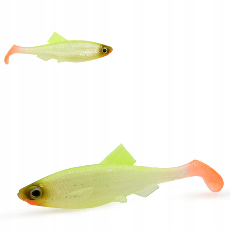

Jak nie być leszczykiem, czyli spinning na Odrze od A do Z
Bo leszcz to ryba spokojnego żeru, a „leszczyk" to stan umysłu. Ten poradnik ma Cię z niego wyprowadzić — z wędką, nie z siecią.
0Wstęp: o co w ogóle chodzi
Krótko o tym, dlaczego Odra, dla kogo ten poradnik i czego się tu (nie) nauczysz.
TL;DR Odra to jedno z najrybniejszych łowisk drapieżników w Polsce, a ten poradnik prowadzi Cię od zera do „wyjadacza" — bez ściemy, z linkami do źródeł.
Odra to jedna z najrybniejszych rzek w Polsce. Dla spinningisty to poligon, na którym można się nauczyć wszystkiego: od mikro-okonia na opasce po nocnego sandacza z głębokiej rynny. Ale rzeka bywa bezlitosna dla ludzi, którzy podchodzą do niej jak do stawu za domem — dlatego powstał ten tekst.
Dla kogo? Dla każdego, kto chce łowić drapieżniki w Odrze i nie wyglądać przy tym jak kompletny nowicjusz. Jeśli już coś łowisz — pominiemy dla Ciebie oczywistości. Jeśli łowisz pierwszy raz — wszystko jest wyjaśnione od zera.
Jak czytać ten poradnik: rozdziały są ułożone od fundamentów do detali. Możesz czytać po kolei albo skakać do spisu treści, gdy znasz podstawy. Wszystko, co wygląda na „twardą liczbę" (wymiary, gramatury), to widełki praktyczne — na rzece ostatecznie decyduje uciąg nurtu i stan wody.
1Poznaj swoją rzekę
Zanim zarzucisz, musisz wiedzieć, gdzie w ogóle stać i dlaczego ryby tam są.
TL;DR Ryby w rzece stoją tam, gdzie jest drobnica i spokojniejszy nurt. Główki, opaski, przykosy, rynny, zwaliska — zapamiętaj: „gdzie patyki, tam wyniki".
W rzece nie ma przypadku: ryby rozmieszczają się według jednej prostej zasady — gdzie jest drobnica i gdzie nie trzeba walczyć z prądem. Drapieżnik stoi tam, gdzie może zaoszczędzić energię i mieć jednocześnie „stołówkę" pod nosem.
Słownik odrzańskich miejscówek
Miejsce
Co to jest
Kogo tam znajdziesz
Główki
Kamienne tamy prostopadłe lub skośne do brzegu, regulujące nurt
Sandacz, szczupak, okoń, boleń — klasyka Odry
Opaska / ostroga
Umocnienie brzegu, przy którym woda podmywa dno
Szczupak, sandacz, okoń
Przykosa
Piaszczyste wypłycenie wcinające się w koryto
Boleń, kleń, jaź, okoń
Rynna
Głębsze koryto głównego nurtu
Sandacz, sum
Zwalisko / patyki
Zwalone drzewa, korzenie, krzaki w wodzie
Szczupak (i wszystko inne, co lubi kryjówki)
Cofka
Miejsce, gdzie nurt słabnie lub zawraca
Wszystko, co nie lubi silnego prądu
„Gdzie patyki, tam wyniki." — najstarsza prawda rzecznego spinningu, powtarzana na każdym forum.
Szczupak unika silnego nurtu i stoi za przeszkodami: zwalonymi drzewami, korzeniami, dołkami za wypłyceniami. Sandacz trzyma się krawędzi prądowych, głębokich dołów i miejsc przy zatopionych drzewach. A tam, gdzie nurt zwalnia, zbiera się drobnica — a za drobnicą przychodzą wszystkie drapieżniki.
2Kto pływa w Odrze
Poznaj przeciwnika, zanim on pozna Ciebie.
TL;DR W Odrze na spinning weźmiesz 7 drapieżników: szczupaka, sandacza, okonia, bolenia, suma, klenia i jazia (plus brzanę jako przyłów). Każdy ma swoje miejsce, czas i przynętę.
Szczupak
Esox lucius
Gdzie / kiedy: opaski, główki, zwalone drzewa, dołki za wypłyceniami — jesień–wiosna, pochmurne dni.
Wygląd: torpedowate, zielonkawo-oliwkowe ciało z jasnymi plamami i paskami; długi, spłaszczony „kaczy" pysk pełen ostrych zębów; płetwa grzbietowa przesunięta daleko w tył, tuż nad odbytową.
Jak odróżnić: jedyny drapieżnik z płetwą grzbietową z tyłu ciała i „kaczym" pyskiem. Od sandacza — brak pionowych pasów i kłów. Praktycznie nie do pomylenia.
Ilustracje: rysunek (R.W. Shufeldt, domena publiczna) · zdjęcie (G. Mittenecker, CC BY-SA 2.5) — Wikimedia Commons
Wygląd: smukły, szarozielony z ciemnymi pionowymi pasami; dwie płetwy grzbietowe (pierwsza twarda, kolczasta); dwa charakterystyczne „kły" w pysku; duże oczy.
Jak odróżnić: od szczupaka — pasy, kły i dwie płetwy grzbietowe; od okonia — smuklejszy, jaśniejszy, większy, bez czerwonych płetw.
Gdzie / kiedy: głębokie doły, cofki, przy dnie — noc, lato–jesień.
Wygląd: bezłuski, oliwkowo-brązowy z marmurkowym wzorem; wielka, szeroka głowa; 6 wąsów (2 długie + 4 krótkie); mała płetwa grzbietowa, za to bardzo długa płetwa odbytowa.
Jak odróżnić: nie do pomylenia — jedyna duża ryba bezłuska z wąsami w Odrze.
Ilustracje: rysunek (J. Couch, domena publiczna) · zdjęcie (D. Florian, CC BY-SA 3.0 de) — Wikimedia Commons
Kleń
Squalius cephalus
Gdzie / kiedy: nurt, przelewy, kamieniste odcinki — wiosna–lato.
Wygląd: walcowate, mocne ciało; duża głowa z szerokim, końcowym pyskiem; duże łuski z ciemnym obrzeżeniem (wyglądają jak siateczka); płetwy brzuszne i odbytowa pomarańczowo-czerwone.
Jak odróżnić: od jazia — większa głowa, szerszy pysk, ciemniejsze obrzeżenie łusek; od bolenia — mniejszy, z ciemniejszym grzbietem.
Ilustracje: rysunek (E. Albin, domena publiczna) · zdjęcie (Pohled 111, CC BY-SA 4.0) — Wikimedia Commons
Jaź
Leuciscus idus
Gdzie / kiedy: nurt, przelewy, kamieniste odcinki — wiosna–lato.
Wygląd: smukły, srebrzysty ze złocistym połyskiem; mała głowa i mały, skośny pysk; czerwonawe płetwy (zwłaszcza brzuszne i odbytowa); łuski mniejsze niż u klenia.
Jak odróżnić: od klenia — mniejszy pysk i głowa, jaśniejszy; od płoci — większy i bardziej złocisty.
Brzana (przyłów): silny nurt, twarde dno, lato — mocny przeciwnik w nurcie. Rozpoznasz po „ryjku" (wysuwalny, skierowany w dół pysk) i dużych łuskach. Zdjęcia ryb mają charakter poglądowy — ich autorzy/prawa wskazani są w linkach źródłowych.
Na Odrze dolnej (rejon Szczecina) szczególnie cenione są stanowiska boleni, kleni, jazi, sandaczy, sumów i szczupaków — rzeka obfituje w główki, opaski, rafy i jazy, które są doskonałymi łowiskami.
3Sprzęt, który nie zrujnuje portfela
Jak złożyć zestaw i nie kupić „grabi", czyli czego naprawdę potrzebujesz.
TL;DR Uniwersalny kij 2,4–2,7 m / 5–30 g, kołowrotek 2500–3000, plecionka 0,10–0,14 mm. Trzymaj przynęty w środku zakresu c.w. i nie przepłacaj.
Wędka
Uniwersalna wędka na Odrę to kij ok. 2,4–2,7 m o ciężarze wyrzutowym 5–30 g i szybkiej akcji. Taki blank obsłuży okonia na gumę, szczupaka na wahadło i sandacza na piętnastogramową główkę — jeden kij, większość scenariuszy.
5–25 g — okoń, kleń, jaź, okazjonalny szczupak
7–30 g — szczupak i sandacz z brzegu (uniwersał)
10–40 g+ — sandacz w głębokim nurcie i sum
Alternatywy:wędka teleskopowa — tańsza i mieści się w plecaku, ale mniej czuła i słabsza; wędka castingowa + multiplikator — celność i moc do jerkowania/suma, ale trudniejsza na start. Na Odrę z brzegu klasyczny spin w zupełności wystarczy.
Zapamiętaj granice swojego kija: dolna granica (np. 5 g) to minimum, poniżej którego nie „poczujesz" przynęty; górna (np. 30 g) to sufit — przeciążysz blank i stracisz rybę albo sprzęt. Trzymaj przynęty w środku zakresu (np. 7–25 g), a nie na krawędziach.
Kołowrotek
Rozmiar 2500–3000 z przełożeniem ok. 5:1. Do bolenia i klenia przyda się szybszy (6:1), żeby nadążyć za prowadzeniem przynęty. Płynny przedni hamulec to podstawa — to on ratuje zestaw przy nagłym odjeździe ryby.
Alternatywy:multiplikator (baitcaster) — większa celność i moc (jerk, sum, ciężkie gumy), ale początkującemu funduje „backlashe" (plątaninę na szpuli). Na start trzymaj się kołowrotka ze stałą szpulą.
Plecionka (linka główna)
Średnica
Do czego
0,06–0,10 mm
Mikrołowienie: kleń, jaź, okoń na paprochy
0,10–0,14 mm
Standard: szczupak, sandacz, okoń, boleń
0,14–0,16 mm (lub 20 lb)
Rzeka z zaczepami i kamieniami — wolniej się przeciera
Alternatywy dla plecionki:żyłka monofilamentowa — rozciągliwa (wybacza błędy w holu), tania i mniej widoczna, ale grubsza i dużo mniej czuła; dobra na start i do woblerów. Fluorocarbon — tonie i jest prawie niewidoczny, ale drogi i sztywny, więc częściej jako przypon niż linka główna. Na rzece, gdzie liczy się czucie brania i dno, plecionka to standard.
💸 Trzy zestawy budżetowe „od A do Z"
Sprawdzone konfiguracje, które łowią, a nie bankrutują. Ceny orientacyjne (z widełek 2024–2025) — mogły się nieco zmienić.
Wariant
Wędka
Kołowrotek
Linka
~Razem
Absolutne minimum
Jaxon Grey Stream 2,65 m / 8–30 g (~120 zł)
Ryobi Ecusima 2500 (~110 zł)
Plecionka Mikado Nihonto 0,14 mm (~35 zł)
~265 zł
Złoty środek
Dragon Express Spin 2,7 m / 5–25 g (~150 zł)
Daiwa Ninja LT 2500 (~200 zł)
Plecionka Power Pro 0,13 mm (~55 zł)
~405 zł
Lekki (okoń/kleń)
DAM Shadow Tele Mini 2,4 m / 7–30 g (~140 zł)
Shimano Catana 1000 (~140 zł)
Żyłka Dragon HM69 0,18 mm (~20 zł)
~300 zł
Do tego „skrzynka startowa": kilka gum 7–12 cm, główki jigowe 7–15 g, obrotówka nr 3, wahadłówka 15–20 g i przypon stalowy — kolejne ~60–80 zł i masz komplet na pierwszą wyprawę.
4Uzbrajanie zestawu
Przypon, hak, główka, węzeł — tu się wygrywa lub traci ryby.
TL;DR Na szczupaka stal/wolfram (min. 20–30 cm), na sandacza fluorocarbon 0,25–0,33 mm. Hak dobieraj do gumy, a nie tylko do ciężaru główki.
Przypon: stal czy fluorocarbon?
Sytuacja
Przypon
Dlaczego
Łowisz na szczupaka
Stalowy / wolframowy, min. 20–30 cm, 5–10 kg+
Szczupak przecina fluorocarbon — stal jest praktycznie obowiązkowa
Sandacz (bez szczupaka)
Fluorocarbon 0,25–0,33 mm, 50–80 cm
Mało widoczny, odporny na ścieranie o kamienie
Sandacz + ryzyko szczupaka
Stal / tytan 15–25 cm
Ochrona przed zębami ważniejsza niż subtelność
Boleń / kleń / jaź
Fluorocarbon cienki 0,20–0,28 mm
Dyskrecja — nie płoszy czujnych ryb
Węzły, które musisz umieć
Na spinning wystarczy kilka węzłów — ale musisz je wiązać pewnie i zawsze zwilżać przed zaciągnięciem (żyłka/fluorocarbon przegrzewają się od tarcia i tracą wytrzymałość). Plecionka się ślizga, więc wymaga więcej zwojów.
Węzeł
Gdzie go używać
Uwagi
Palomar
Plecionka → agrafka/krętlik; hak w drop shocie
Najpewniejszy na plecionce, prosty — standard do agrafki
Uni Knot (podwójny)
Plecionka → przypon (uni-to-uni); agrafka; hak
Najbardziej uniwersalny — naucz się go jako pierwszego
Improved Clinch (klincz)
Żyłka/fluorocarbon → agrafka, hak
Klasyk na żyłkę; na plecionce słabszy
Rapala Loop (pętlowy)
Żyłka/fluoro → wobler, wahadłówka
Luźna pętla = swobodna praca przynęty
FG knot
Plecionka → fluorocarbon (przypon główny)
Najsmuklejszy — płynnie przechodzi przez przelotki, idealny do rzutów
Albright / Crazy Alberto
Plecionka → gruby fluorocarbon lub stalka
Gdy średnice mocno się różnią
Surgeon Loop (pętla chirurga)
Boczny trok, drop shot (odnogi boczne)
Szybka pętla na przypon boczny
Palomar
plecionka → agrafka
Uni Knot
uniwersalny
Improved Clinch
żyłka → hak
Rapala Loop
wobler / wahadłówka
FG knot
plecionka → fluoro
Schematy poglądowe. Zasada uniwersalna: zwilż węzeł przed zaciągnięciem i dociągaj wolno, bez szarpnięcia.
Zasada kciuka: plecionka → Palomar/Uni/FG; żyłka i fluorocarbon → Clinch/Uni/Rapala Loop; łączenie plecionki z przyponem → FG (na poważnie) lub Albright/uni-to-uni (na szybko). Nie kombinuj z dziesięcioma węzłami — opanuj te i wiąż je pewnie.
Haki i główki — orientacyjne rozmiary
Gatunek
Główka jigowa
Hak
Guma / przynęta
Okoń
2–7 g
nr 4 – 1/0
3–8 cm (twistery, paprochy, rippery)
Sandacz
5–12 g (opad) / 15–30 g (nurt)
1/0–4/0
8–12 cm — kopyta, smukłe shady
Szczupak
7–21 g
2/0–5/0
10–20 cm (duże gumy, kopytka, jerki)
Boleń
5–15 g (lub woblery)
1/0–2/0
5–8 cm smukłe (rippery, pilkery, woblery)
Sum
20–60 g
5/0–8/0
15–25 cm+ (duże gumy, kopyta)
Kleń / Jaź
1–7 g
nr 6 – 2
3–7 cm (mikrogumy, małe woblery, cykady)
Rozmiar haczyka w milimetrach — żeby nie zgadywać
Numery haczyków (nr 4, 2/0…) nie są ujednolicone między producentami — ten sam „nr 4" u dwóch firm może mieć inny rozmiar. Pewniejszy jest rozwaru (szerokość łuku) w milimetrach:
Zasada doboru haka: hak ma pasować do długości i grubości gumy, nie tylko do ciężaru główki. Guma 6–8 cm → hak nr 2–1/0; 8–10 cm → 1/0–3/0; 10–13 cm → 3/0–5/0. Za duży hak „uszywnia" przynętę i zabija jej pracę.
5Przynęty: co, kiedy i czy kolor ma znaczenie
Krótki przewodnik po skrzynce, której nie trzeba wypchać po sufit.
TL;DR Szczupak — gumy/wahadłówki/obrotówki nr 3–5; sandacz — kopyta i smukłe shady z opadu; boleń — smukłe woblery prowadzone szybko. Kolor to sprawa drugorzędna, rozmiar i prowadzenie — pierwszorzędna.
Cztery rodzaje przynęt, które musisz znać

Guma miękka (ripper, kopyto, twister, shad)
Co to: silikonowa przynęta na główce jigowej lub czeburaszce. Król opadu i rzeki.
Na co: sandacz (kopyta 8–12 cm), szczupak (10–20 cm), okoń (3–8 cm), sum (15–25 cm).
Przynęty powierzchniowe — na lato i żerujące przy lustrze
Kiedy drapieżnik poluje przy powierzchni (boleń, szczupak w zaroślach, okoń w ataku na stado uklei), przynęty powierzchniowe dają spektakularne brania „na wierzchu".
Typ
Jak działa
Na co
Popper
Wklęsły „pyszczek" pluje wodą przy szarpnięciu — głośne, prowokujące
Szczupak, okoń (lato, płytkie zarośla)
Walker
Slalom „ósemką" po powierzchni przy podrygiwaniu
Szczupak, boleń
Wobler powierzchniowy
Płynie tuż pod lustrem, kołysząc się
Boleń, kleń (imitacja uklei)
Łódka/slide
Przynęta „ślizgająca się" po wodzie
Boleń na żerowisku
Zasada: łów powierzchnię w ciepłe poranki i wieczory, kiedy słychać „chlapania". Rzucaj za stado uklei i prowadź przynętę przez nie.
Czy kolor ma znaczenie?
O, to jest pytanie, które potrafi skłócić dwóch wędkarzy nad jedną rzeką. Prawda leży mniej więcej tak:
Nurt główny: kolor ma znaczenie drugorzędne — rozmiar, kształt i prowadzenie liczą się bardziej.
Ale: w skrajnych warunkach kolor potrafi robić różnicę — w mętnej wodzie lepiej widać jaskrawe (żółty, pomarańczowy, chartreuse), w czystej naturalne (perła, naturalny shad, motor oil).
Głęboko: gdzie dociera mało światła, sprawdzają się barwy jasne, białe i fluorescencyjne.
„Kolor nie ma znaczenia" — powie Ci jeden. „Na mętnej seledyn robi robotę" — powie drugi. Obaj mają trochę racji. Miej kilka kolorów, nie dwadzieścia.
6Techniki prowadzenia
Żeby guma „żyła", a nie wyglądała jak martwy kawałek silikonu.
TL;DR Król rzeki to opad: rzuć, czekaj aż opadnie, podrywaj. Branie najczęściej na opadaniu. Główka jak najlżejsza, ale tak, żeby czuć stuknięcie o dno.
Jednostajne zwijanie, przynęta pracuje jednostajnie
Boleń, szczupak (wahadłówka/obrotówka)
Skoki po dnie
Krótkie podbicia i opad, kontakt z dnem
Okoń, sandacz
Twitching
Szarpnięcia szczytówką + pauzy
Szczupak (jerki, woblery)
Pod powierzchnią
Szybkie zwijanie tuż pod lustrem wody
Boleń, kleń, jaź
Złota zasada opadu: ciężar główki dobieraj jak najmniejszy, ale taki, żeby czuć stuknięcie o dno. Branie bardzo często następuje właśnie w trakcie opadania, zanim przynęta dotknie dna. Kto nie czuje dna — ten wróży z fusów.
Rigi, o których warto wiedzieć
Poza klasyczną główką jigową istnieje cała rodzina „rigów" — zestawów, w których ciężarek i przynęta są rozdzielone. Każdy ma swoje miejsce nad Odrą.
Rig
Jak wygląda
Kiedy go użyć
Drop shot
Hak na lince, a ciężarek zawieszony poniżej haka (na końcu przyponu). Przynęta „wisi" 20–40 cm nad dnem.
Gdy ryba jest płochliwa albo przydenna — delikatne podrygiwanie szczytówką w miejscu. Świetny na sandacza z opasek i okonia. Hak 2–1/0, węzeł Palomar z długim końcem.
Boczny trok
Cieżarek na końcu, hak na bocznym, odchodzącym przyponie wyżej na lince.
Prowadzenie z nurtem, obławianie toni; przynęta pracuje swobodniej niż na główce. Dobre na okonia i drobnego drapieżnika.
Texas rig
Cieżarek (najlepiej kulka) bezpośrednio przy haku offsetowym, hak schowany w gumie (bezzaczepowy).
Zaczepione łowiska — zwaliska, zielsko, kamienie. Przynęta prześlizguje się przez przeszkody, nie zahaczając.
Carolina rig
Cieżarek oddalony od przynęty na przyponie ~30 cm, z krętlikiem i koralikiem między nimi.
Guma pracuje swobodnie nad dnem, ciężarek „stuka" po dnie i przyciąga uwagę. Dobre na okonia i sandacza na równym dnie.
Prosty skrót: drop shot = ciężarek POD hakiem; Texas = ciężarek PRZY haku; Carolina = ciężarek DALEKO od przynęty; boczny trok = hak na bocznym odgałęzieniu.
Czytanie dna główką jigową
Główka jigowa to Twoje „oczy pod wodą". Plecionka (nie rozciąga się) przenosi na szczytówkę to, co dzieje się z przynętą na dnie — wystarczy się tego nauczyć.
Typ dna
Jak to czujesz
Co z tym zrobić
Muł
Główka miękko „zapada się", lekko się klei, przynęta jakby „siada"
Króć pauzy, daj lżejszą główkę albo prowadź wyżej — w mule przynęta znika rybom z oczu
Piasek
Równomierne, delikatne stuknięcie, bez wibracji
Uniwersalnie — spokojnie możesz trzymać kontakt z dnem
Żwir
Drobne, „chrzęszczące" drgania przy przeciąganiu
Dobre miejsce — drapieżniki lubią żwir; zwolnij tempo
Kamienie / głazy
Twarde „stuk-stuk", czasem główka klinuje się między kamieniami
Weź rig bezzaczepowy (Texas) albo drop shot nad zielskiem
Ćwiczenie: rzucaj na znany odcinek i „słuchaj" dna. Po kilku sesjach rozpoznasz muł, piasek i kamienie z zamkniętymi oczami.
Branie i zacięcie — jak to naprawdę wygląda
Nie każde „puknięcie" to ryba. Tu najważniejsze: nie zacinać na pierwszy kontakt (to często zaczep albo ryba „trąca" przynętę), ale u sandacza nie zwlekać — branie bywa ledwo wyczuwalne.
Ryba
Jak bierze
Zacięcie
Sandacz
Delikatne „puk-puk" albo nagły ciężar (guma nagle „nie spada"); czasem ledwo wyczuwalny pstryk
Zdecydowane, szybkie, ale nie szarpane — sandacz ma twardy pysk, przecinaj pewnie
Szczupak
Gwałtowne uderzenie albo „wyszarpnięcie" przynęty; bywa, że przynęta po prostu „znika"
Mocne i pewne — przypon stalowy wytrzyma, nie odpuszczaj
Okoń
Ostre, nerwowe „pukanie", często seria puknięć w stadzie
Krótkie, energiczne zacięcie nadgarstkiem
Boleń
Uderzenie z zaskoczenia, często sam się zacina w rozpędzie
Krótkie zacięcie, kij w górę — boleń ma delikatny pysk
Kleń / jaź
Szybkie branie, potrafi wziąć i wypuścić w ułamku sekundy
Błyskawiczna reakcja — zwlekanie = strata ryby
Technika zacięcia: nie wymachuj wędziskiem nad głową. Krótki, zdecydowany ruch szczytówką w górę/w bok (wystarczy 20–30 cm) i od razu utrzymuj napięcie — plecionka przenosi zacięcie natychmiast. Po zacięciu nie luzuj linki ani na sekundę.
7Hol i bezpieczne wyjęcie ryby
Złowić to połowa sukcesu. Druga połowa to nie stracić ryby przy brzegu i wypuścić ją (lub zabrać) bez szkody — dla niej i dla Ciebie.
TL;DR Utrzymuj napięcie linki, pracuj wędką (nie kołowrotkiem), luzuj hamulec przy odjeździe. Szczupaka odhaczaj rozwieraczem i uwalniaczem — nigdy palcami w pysku.
Hol — zasady, które ratują ryby
Nie luzuj linki ani na sekundę — haczyk wypada z ryby dokładnie wtedy, gdy linka zwisa.
Pracuj blankiem, nie korbką. Wędka amortyzuje zrywy ryby; kołowrotkiem tylko dobierasz luz.
Hamulec ma „chodzić". Przy mocnym odjeździe (sum, duży szczupak) daj rybie pociągnąć — hamulec oddaje linkę, zamiast zrywać zestaw.
Pompuj. Podnieś szczytówkę, opuść i jednocześnie zwijaj — klasyczne „pompowanie" wyciąga rybę bez przeciążania sprzętu.
Przy brzegu opuść szczytówkę nisko i dociągnij rybę do podbieraka — nie szarp jej pionowo w górę (zerwiesz wargę lub zestaw).
Ryba
Specyfika holu
Szczupak
Krótkie, gwałtowne zrywy i świece; trzymaj kij nisko przy brzegu, nie daj mu „świecy" nad wodą
Sandacz
Zwykle „ciągnie" równo i głęboko; nie spiesz się — jego pysk jest twardy, ale zacięcie płytkie może wypaść
Sum
Masa, nie szybkość — wyciąganie z dołu potrafi trwać; hamulec i dużo cierpliwości
Okoń
Delikatny pysk — hol spokojnie, bez forsowania, żeby go nie „oderwać"
Boleń
Gwałtowny start i szybkie zmiany kierunku; delikatny pysk — luzowanie przy odjazdach
Bezpieczne odhaczanie — zwłaszcza szczupaka
Szczupak to nie „patyk" — setki ostrych, zakrzywionych zębów. Nigdy nie wkładaj palców do pyska.
Niezbędnik: rozwieracz (rozchyla pysk), uwalniacz/pęseta i szczypce do głębokich zacepów.
Chwyć szczupaka pewnie za pokrywy skrzelowe (od spodu, pod głową), nie za oczy i nie „za kark" w pojedynkę bez praktyki.
Głęboko połkniętą przynętę: przetnij hak szczypcami lub wyjmij uwalniaczem — czasem lepiej zostawić kawałek haka niż ranić rybę.
Podbierak z miękkiej (gumowanej) siatki — nie niszczy śluzu i łusek ryby.
No-kill krok po kroku
Przygotuj sprzęt przed wyjęciem ryby (uwalniacz, miarka, aparat).
Mokre ręce — sucha dłoń zdziera śluz, który chroni rybę.
Ryba poza wodą minimum czasu — im krócej, tym lepiej.
Zdjęcie szybko, rybę trzymaj poziomo (duże sztuki podpieraj pod brzuch).
Wypuść i wspieraj rybę w wodzie, aż sama odpłynie — nie „rzucaj" jej z powrotem.
8Czytanie rzeki
Jak znaleźć miejscówkę bez echosondy, samą parą oczu i zdrowym rozsądkiem.
TL;DR Obserwuj drobnicę, „chlapania" bolenia, ptaki i brzeg. Rzucaj wachlarzowo. Echosonda to luksus, nie konieczność.
Obserwuj drobnicę. Tam, gdzie uciekają stada uklei, za chwilę pojawi się boleń. Gdzie żeruje drobnica — tam przyjdzie drapieżnik.
Słuchaj i patrz na powierzchnię. „Chlapania" bolenia, kręgi, uciekająca drobnica — to mapy miejscówek za darmo.
Czytaj brzeg. Zwaliska, nawisy, korzenie, kamienne opaski — wszystko, co daje kryjówkę, przyciąga ryby.
Szukaj spowolnień nurtu. Krawędzie prądowe, cofki, miejsca za główkami — tam ryby odpoczywają i żerują bez walki z prądem.
Ptaki wodne. Skupiska mew i rybitw często zdradzają, gdzie drapieżnik wypycha drobnicę ku powierzchni.
Rzucaj wachlarzowo. Systematycznie przeczesuj łuk przed sobą, zamiast bezmyślnie walić w jedno miejsce.
9Twoje miejscówki
Zaznaczaj, zapisuj i wracaj do sprawdzonych punktów — na mapie i w notatkach.
TL;DR Znajdź punkt w Google Maps, skopiuj link/współrzędne, wklej poniżej — zapisze się w Twojej przeglądarce i otworzy jednym kliknięciem.
Mapa poglądowa (Odra, jezioro Dąbie, Regalica). W podglądzie może być pusta — po wgraniu na hosting ładuje się normalnie. Aby zobaczyć konkretny punkt, otwórz linki z listy poniżej.
Jak zapisać miejscówkę w 3 krokach
1
Otwórz Google Maps i znajdź swój punkt nad Odrą (główkę, opaskę, zwalisko).
2
Kliknij prawym przyciskiem (na telefonie: przytrzymaj palcem) w tym miejscu, żeby upuścić pinezkę.
3
Skopiuj współrzędne (albo kliknij Udostępnij → Kopiuj link) i wklej do formularza poniżej.
➕ Dodaj miejscówkę
Zapisane miejscówki
10Kalendarz leszczyka
Sezon, pogoda, pory dnia — i które z tych „prawd" to bajki.
TL;DR Jesień = szczupak i sandacz; lato = boleń i kleń; sandacz nocą. Fazy księżyca to wróżenie z fusów — najlepsza pora to ta, kiedy jesteś nad wodą.
Pora
Co się dzieje
Na co celować
Wiosna
Rzeka budzi się po zimie, drobnica zbiera się w spokojnych miejscach
Okoń, szczupak (po okresie ochronnym), kleń, jaź, boleń
Lato
Woda ciepła, ryby żerują o świcie i zmierzchu
Kleń, jaź, boleń, okoń; sandacz nocą
Jesień
Najlepszy czas na drapieżniki — ryby żerują przed zimą
Szczupak, sandacz, sum
Zima
Ryby w głębokich rynnach, wolne tempo
Sandacz i okoń w głębokich dołach
🗓️ Kalendarz okresów ochronnych
Grafika: wiersz = gatunek, kolumny = miesiące. Pomarańczowe bloki = okres ochronny (nie wolno łowić ani zabierać), ciemne = wolno łowić.
Sty
Lut
Mar
Kwi
Maj
Cze
Lip
Sie
Wrz
Paź
Lis
Gru
Szczupak 50 cm
Sandacz 50 cm
Sum 70 cm
Boleń 40 cm
Brzana 40 cm
Certa 30 cm
Węgorz 60 cm
Miętus 30 cm
Troć wędrowna 50 cm
Łosoś 50 cm
Okoń 20 cm
Kleń 30 cm
Jaź 30 cm
wolno łowić okres ochronny
UWAGA — czytaj z rozsądkiem: to kalendarz orientacyjny wg ogólnopolskiego RAPR (rozporządzenia). Okręgi PZW (w tym Szczecin) mogą wprowadzać odstępstwa — np. na Odrze nr 5 wymiar ochronny szczupaka i sandacza to 45 cm, a okres ochronny sandacza 1.03–31.05. Na wodach morskich obowiązują odrębne wymiary i okresy organizmów morskich. Zawsze sprawdzaj regulamin swojego okręgu i łowiska.
Strategie na poszczególne miesiące
Co realnie robisz nad Odrą w każdym miesiącu (orientacyjnie, z poprawką na stan wody i temperaturę).
Miesiąc
Co robić
Styczeń
Szczupak, sandacz i sum pod ochroną — realnie zostaje okoń i spokojne łowienie; sprawdź odstępstwa okręgowe.
Luty
Końcówka ochrony szczupaka; sandacz i sum wciąż chronione; okoń i jaź na lekkim sprzęcie.
Marzec
Sandacz nadal chroniony (na Odrze nr 5 od 1.03); przygotuj sprzęt, testuj węzły i przynęty przed sezonem.
Kwiecień
Szczupak wraca od 1.05 — na razie wiosenne okonie, jazie i klenie w nurcie.
Maj
START: szczupak (od 1.05) i często sandacz (od 1.06); płytsze opaski i trzcinowiska po tarle.
Czerwiec
Sandacz i sum (od 1.06); boleń na przykosach o świcie; ciepłe wieczory na opaski.
Uważaj na przyduchę i zakwity glonów; łów przy natlenionych miejscach; no-kill na maksa.
Wrzesień
Początek żerowania jesiennego — szczupak i sandacz wracają do gry; klasyk na gumy z opadu.
Październik
Złoty okres: duże gumy, wahadłówki, sandacz z głębszych rynien; szczupak przed zimą.
Listopad
Jeszcze żerują; łów doły i głębokie rynny; troć i łosoś pod ochroną (1.10–31.12).
Grudzień
Zimowy sandacz i okoń w głębokich dołach; węgorz i miętus pod ochroną; wolne, przy dnie.
Pory dnia: sandacz to „specjalista od nocnych brań" — najlepiej bierze o świcie, zmierzchu i nocą. Boleń i kleń to ryby światła. Szczupak lubi pochmurne dni i ciszę przed burzą.
Bajki, które warto znać (ale nie traktować jak wyroczni): fazy księżyca i solunary bywają podawane jako pewnik brań, ale wielu wędkarzy uważa je za wróżenie z fusów. Stabilne ciśnienie atmosferyczne ma zwykle większy wpływ na żerowanie niż tarcza księżyca. Jedno jest pewne: najlepsza pora na ryby to ta, kiedy jesteś nad wodą.
11Sytuacje na Odrze — jak reagować
Rzeka nie jest stała. Te same miejscówki łowią inaczej przy wysokiej i niskiej wodzie. Oto najczęstsze scenariusze i reakcje.
Ryby podchodzą bliżej brzegu, opasek i granic nurtu; widoczność niska
Jaskrawe, kontrastowe i mocno wibrujące przynęty; cięższa główka (utrzymaj dno); skróć dystans rzutu
Niski stan + upał (ryzyko przyduchy)
Ryby osłabione, schodzą do głębszych, natlenionych miejsc (progi, ujścia, cień)
Łów delikatnie, przy głębszych i natlenionych punktach; rozważ wypuszczenie wszystkiego — ryba jest w stresie
Mocny nurt
Ryby trzymają się za przeszkodami i w spowolnieniach — tam, gdzie nie walczą z prądem
Cięższa główka, rzuty pod prąd/ukosem, obławiaj „cień" za główkami, filarami i kamieniami
Krystalicznie czysta woda
Ryby płochliwe, widzą Cię z daleka
Naturalne kolory, cienki fluorocarbon, dłuższe rzuty, cisza na brzegu, nie stój na linii rzutu
Silny wiatr
Trudniejsze rzuty i prowadzenie; fala napowietrza wodę
Łów od strony nawietrznej (wiatr w plecy), cięższe przynęty, skróć rzut
Noc (sandacz)
Sandacz podchodzi do brzegu i żeruje
Wolne prowadzenie, przynęty o mocnej sylwetce (ciemne na tle nieba lub jasne); celuj w oświetlone opaski i mosty
Po burzy / skok ciśnienia
Żerowanie bywa intensywne tuż przed i po zmianie ciśnienia
Wykorzystaj okno czasowe — ryby bywają aktywne krótko, łów wtedy na aktywniejsze przynęty
12Prawo i etyka
Żeby przyjemność nie skończyła się mandatem — i żeby rzeka została dla następnych.
TL;DR Karta wędkarska + zezwolenie PZW to podstawa. Wymiary ochronne i limity zmieniają się co roku — sprawdzaj w swoim okręgu. Nie zostawiaj śmieci, wypuszczaj z głową.
Podstawa: karta i zezwolenie
Na wodach śródlądowych (PZW i RZGW/Wody Polskie) do wędkowania potrzebujesz karty wędkarskiej i zezwolenia na dany okręg. Bez nich łowienie jest nielegalne. Sprawdź zasady Okręgu PZW Szczecin.
⚠️ Szczególna sprawa — granica wód morskich w Szczecinie: poniżej linii trzech mostów zaczynają się morskie wody wewnętrzne: na Odrze zachodniej to Most Długi (Trasa Zamkowa), na Regalicy Most Cłowy, na Kanale Parnickim Most Portowy. Poniżej nich nie potrzebujesz karty wędkarskiej ani opłat PZW — wystarczy zezwolenie na rekreacyjne wędkowanie w morzu (opłata), dowód uiszczenia opłaty oraz dokument tożsamości. To prostszy reżim niż na wodach śródlądowych. (Źródło: Wiadomości Wędkarskie — „Szczecin sandaczem stoi")
Prawo morskie w pigułce (poniżej mostów)
Rekreacyjne wędkowanie na morskich wodach wewnętrznych Odry reguluje ustawa o rybołówstwie morskim (z 19.12.2014) oraz rozporządzenie w sprawie wymiarów i okresów ochronnych organizmów morskich poławianych rekreacyjnie.
Bez karty wędkarskiej — wystarczy dowód uiszczenia opłaty + dokument tożsamości (oraz dokument uprawniający do zniżki, jeśli z niej korzystasz).
Organ: Główny Inspektorat Rybołówstwa Morskiego (GIRM) w Słupsku. Nie wydaje papierowych zezwoleń — uprawnienie nabywa się przez wpłatę na konto.
Okres
Opłata (orientacyjnie)
Tydzień
~15 zł
Miesiąc
~25 zł
Rok (12 mies.)
~65 zł
Kwoty bywają waloryzowane (kiedyś było 7/11/42 zł) — sprawdź aktualne na amatorskie-wedkowanie.pl lub bezpośrednio w GIRM w Słupsku.
Uwaga na wymiary ochronne morskie: na wodach morskich obowiązują odrębne wymiary i okresy ochronne organizmów morskich (inne niż w PZW) — reguluje je rozporządzenie ministra, a wartości bywają aktualizowane. Sprawdź je przed łowieniem, zwłaszcza na gatunki dwuśrodowiskowe (łosoś, troć) i drapieżniki w wodach przejściowych.
Wymiary ochronne i limity — wody śródlądowe (PZW, orientacyjnie!)
UWAGA: wartości poniżej są orientacyjne i zmieniają się co roku oraz różnią między wodami. Na odcinkach granicznych Odry obowiązują odrębne regulaminy polsko-niemieckie. Zawsze weryfikuj w swoim okręgu przed wyjściem nad wodę.
Gatunek
Wymiar ochronny (typowo)
Uwagi
Szczupak
ok. 50 cm
Okres ochronny regionalnie (zwykle styczeń–kwiecień)
Sandacz
ok. 50 cm
Okres ochronny regionalnie (zwykle styczeń–maj)
Sum
ok. 70 cm
Limit dobowy zwykle 2 szt.
Boleń
ok. 40 cm
Limit dobowy zwykle 2 szt.
Okoń
ok. 18–20 cm
Zależnie od okręgu
📏 Miarka na ekranie — do wymiarów ochronnych
Jak skalibrować: połóż na ekranie kartę płatniczą/kredytową (standardowa szerokość = 85,6 mm) i zmieniaj zoom (Ctrl +/−) tak, aby jej krawędź zgadzała się z kreską „0" i „8,5" na linijce. Po zgraniu linijka pokazuje realne milimetry — możesz mierzyć rybę na zdjęciu czy przy podbieraku.
Limity dobowe: typowo szczupak + sandacz łącznie 2 szt., sum 2 szt. — po wypełnieniu limitu część regulaminów nakazuje zakończyć wędkowanie.
Etyka leszczyka kontra etyka wyjadacza
Zabierz śmieci. Papierek po przynęcie, opakowanie, zerwana żyłka — wszystko wraca do plecaka. Zostawiona plecionka zabija ptaki i ryby.
Wypuszczaj z głową. Rybę poniżej wymiaru delikatnie i szybko. Mokre ręce, minimum czasu poza wodą, podbierak z miękkiej siatki.
Szacunek do stanowiska. Nie wchodź drugiemu wędkarzowi „w rzut". Nie hałasuj. Rzeka należy do wszystkich.
No kill to nie obowiązek, ale wdzięczność. Wielu odrzańskich wędkarzy wypuszcza drapieżniki — to inwestycja w to, żeby za rok też było co łowić.
13Na północ od Szczecina: Zalew i wody morskie
Tuż za miastem zaczyna się inny świat — Zalew Szczeciński i morskie wody wewnętrzne. Warto wiedzieć, co tam czeka.
TL;DR Zalew Szczeciński to najbogatsze gatunkowo łowisko w Polsce — wody słonawe, płycizny ~1,5 m i głęboki tor wodny. Wody morskie = bez karty wędkarskiej, tylko opłata morska.
Co to za woda
Zalew Szczeciński to morskie wody wewnętrzne, ale o wodzie słonawej — żyją tu ryby słodkowodne przystosowane do soli (płoć, leszcz, sandacz, szczupak, węgorz, okoń).
Głębokości: średnio zaledwie ok. 1,5 m (duże płycizny!), za to tor wodny ze Szczecina do Świnoujścia sięga 14 m. Pod brzegami Roztoki Odrzańskiej ~4 m.
Roztoka Odrzańska i Jezioro Dąbie (największy akwen Szczecina, ~56 km²) to główne łowiska południowej części zalewu.
Kogo tam złowisz
Najbogatsze gatunkowo łowisko kraju: niemal wszystkie ryby karpiowate plus drapieżniki — szczupak, sandacz, okoń, boleń, sum, miętus, a w wodach przejściowych łosoś i troć wędrowna.
Miejscówki na starcie
Trzcinowiska i zatoki (płytkie) — szczupak, zwłaszcza północna część Dąbia i brzegi wysp.
Głębsze partie, rynny i przesmyki — sandacz; na Dąbiu część południowa i centralna.
Regalica, Kanał Parnicki, Starorzecze Kiełpińskie — duże szczupaki i sandacze przy mostach i prądach.
Wyspa Pucka i okolice Wyspy Grodzkiej — drapieżniki w kanałach centrum Szczecina.
Prawo i sezony
Bez karty wędkarskiej — na wodach morskich wystarczy opłata morska + dokument tożsamości.
Sezony orientacyjnie (wg organizatorów wypraw): okoń cały rok, szczupak 01.05–31.12, sandacz i sum 01.06–31.12 — ale zawsze weryfikuj, bo wymiary/okresy ochronne organizmów morskich bywają aktualizowane.
Metody: spinning, trolling, drop shot, martwa rybka. Na płyciznach sprawdza się lekki spinning; na torze wodnym — cięższy sprzęt.
Odra i Zalew to w dużej mierze łowiska łodziowe — trolling otwiera miejsca niedostępne z brzegu.
TL;DR Trolling = holowanie przynęty za płynącą łodzią. Klucz: dobrać woblera tak, by schodził na głębokość, na której stoi ryba, i utrzymać właściwą prędkość.
Sprzęt: mocniejszy kij (c.w. 30–80 g), multiplikator lub kołowrotek z licznikiem linki, plecionka + przypon. Do zejścia głębiej: downrigger lub planery/ciężarki.
Przynęty: woblery nurkujące (z tabelą schodzenia), duże gumy na główkach, obrotówki/wahadłówki. Na sandacza — smukłe woblery przy dnie; na szczupaka — duże jerki i woblery na płyciznach.
Prędkość: sandacz/szczupak lubią wolno (1,5–2,5 km/h), boleń i okoń — szybciej. Obserwuj pracę przynęty.
Technika: prowadź wzdłuż spadów, rynien i krawędzi toru wodnego; zmieniaj dystans przynęty od łodzi i głębokość.
Gdzie: tor wodny Zalewu (sandacz, sum), płycizny i trzcinowiska (szczupak), otwarte ploso Odry (boleń).
Przepisy: sprawdź limity wędek z łodzi i wymogi (kamizelki, zezwolenie morskie na Zalewie) — łowienie z łodzi ma osobne zasady.
Bezpieczeństwo na wodzie: kamizelka asekuracyjna zawsze, sprawdź pogodę i stan wody, nie łów w torze żeglugowym. Trolling w nurcie wymaga wprawy — zaczynaj na spokojnej wodzie.
15Martwa i żywa rybka
Najstarsza metoda na drapieżniki — na Odrze wciąż zabójczo skuteczna na szczupaka i suma, zwłaszcza tam, gdzie sztuczne przynęty zawodzą.
TL;DR Żywa lub martwa rybka na zestawie z przyponem stalowym i kotwiczką/hakiem. Szczupak i sum biorą niemal zawsze. Pamiętaj o przepisach — żywca i jego wymiar reguluje regulamin.
Zestaw
Gruntówka lub spławik — na rzece klasyka to zestaw gruntowy z ciężarkiem i przyponem.
Hak/kotwiczka — pojedynczy hak 2–4 lub kotwiczka 4–6 pod wielkość rybki.
Jak zbroić
Żywca — za pyszczek (przez obie wargi) lub za grzbiet (przed płetwą grzbietową, nie uszkadzając kręgosłupa), żeby rybka pływała naturalnie.
Martwą rybkę — najczęściej na zestawie „trupka" lub z kotwiczką wzdłuż ciała; prowadź ją powoli, imitując ranną rybkę.
Gatunki na żywca: płoć, ukleja, kiełb, okoń (sprawdź dozwolone gatunki i wymiary!).
Przepisy: na wielu wodach obowiązują limity żywca (gatunki, wymiar, liczba) i zakaz łowienia na żywca niektórych ryb. Sprawdzaj regulamin okręgu i łowiska — tu łatwo o mandat.
16Dziennik Odry
Co się ostatnio działo w rzece i w jej dopływach — oraz co to może znaczyć dla Twojego wędkowania. Oś czasu, od najnowszych wstecz.
TL;DR Po katastrofie 2022 (złota alga) Odra się odbudowuje, ale wciąż zdarzają się przyduchy, zakwity glonów i podejrzane zrzuty. Sprawdzaj komunikaty przed każdą wyprawą.
Zanim zarzucisz: to subiektywne, skrótowe zestawienie na podstawie ogólnodostępnych doniesień. Przed wyprawą zawsze sprawdzaj oficjalne komunikaty — monitoring Wód Polskich i WIOŚ, alerty RCB oraz stronę rządową gov.pl/web/odra (zakazy i stany wody). Ryby z Odry bywały objęte czasowym zakazem spożycia — lepiej wiedzieć zawczasu.
11 sierpnia 2026 · zrzut / ścieki
Wędkarze nagrali ciemny zrzut z niemieckiej strony (rejon Schwedt)
Polscy wędkarze zarejestrowali spływającą do Odry czarną, śmierdzącą substancję tuż przy granicy z Brandenburgią, w pobliżu Parku Narodowego Unteres Odertal i rafinerii w Schwedt. Sprawa wywołała interwencje samorządowców i posłów.
⚠️ Dla wędkarza: zgłoszenie wędkarzy, oficjalnie niepotwierdzone — ale to graniczny odcinek Odry, który łowią właśnie wędkarze z rejonu Szczecina. Warto śledzić komunikaty WIOŚ.
4–10 czerwca 2026 · przyducha
Śnięte ryby w Odrze i jeziorze Dąbie (Szczecin) — przyducha, nie złota alga
Z Odry w okolicach Szczecina wyłowiono ok. 200 kg śniętych ryb. Badania wykluczyły złotą algę, wskazały za to niski poziom tlenu (przyducha), wysokie zasolenie oraz podwyższone stężenie azotu i fosforu. Zjawisko lokalne, ograniczone do szczecińskiego węzła wodnego i części Regalicy.
⚠️ Dla wędkarza: to Twoje podwórko. Przyducha najczęściej dopada ryby w ciepłe, bezwietrzne dni przy niskim stanie — wtedy w płytkich, wolno płynących miejscach łowienie bywa słabe, a ryby osłabione.
20 stycznia 2026 · podsumowanie sezonu
Oficjalne podsumowanie sezonu 2025 na Odrze
Rządowe podsumowanie: mimo bardzo niekorzystnych warunków hydrologicznych w 2025 r. nie odnotowano złotej algi w nurcie Odry. Z Odry i Kanału Gliwickiego odłowiono 4,5 t śniętych ryb, z czego złota alga odpowiadała za ok. 250 kg — reszta to infekcje wirusowe i niski poziom tlenu.
ℹ️ Dla wędkarza: dobra wiadomość na wejście w 2026 — rzeka główna była „czysta" od złotej algi, ale rybostan wciąż odbudowuje się po 2022 r.
16 października 2025 · złota alga
„Musimy nauczyć się z nią żyć" — alga zostaje na lata
Eksperci podkreślają, że złota alga (Prymnesium parvum) w zlewni Odry zostanie na stałe, bo jej zakwitom sprzyja wysokie zasolenie. W walce z nią testowano nadtlenek wodoru, który redukuje liczebność algi o ponad 90%.
ℹ️ Dla wędkarza: alga będzie wracać w dopływach i zbiornikach przy niskim stanie i wysokim zasoleniu. Ryby z miejsc objętych zakwitem lepiej wypuszczać.
Wrzesień 2025 · zasolenie / NIK
Raport NIK: kopalnie zasalały rzeki „zgodnie z prawem"
Najwyższa Izba Kontroli potwierdziła, że zrzuty zasolonych wód z kopalń węgla na Śląsku poważnie obciążały rzeki, a system pozwoleń i nadzoru nie chronił ich skutecznie. Średnie zasolenie zrzutów bywało wyższe niż w Bałtyku.
ℹ️ Dla wędkarza: to zasolenie jest „paliwem" dla złotej algi. Problem ma charakter systemowy i nie zniknie szybko — stąd stała czujność na stan wody.
Kwiecień–maj 2025 · glony (inne)
Śnięte ryby w Kanale Gliwickim i Odrze — tym razem nie złota alga
Od początku kwietnia wyłowiono łącznie ponad 2,5 t śniętych ryb. WIOŚ w Opolu nie stwierdził złotej algi ani zanieczyszczenia — wstępne badania wskazały zakwit innych glonów, zmieniający parametry wody.
ℹ️ Dla wędkarza: przypomnienie, że nie tylko złota alga dusi ryby — każdy zakwit przy niskim stanie potrafi wywołać lokalne śnięcia.
Sierpień 2024 · złota alga
Złota alga w Jeziorze Dzierżno Duże i Kanale Gliwickim
Badania potwierdziły toksynę złotej algi. Wyłowiono 3,9 t śniętych ryb. By powstrzymać spływ algi do Odry, na kanale rozstawiono bariery ze słomy jęczmiennej, a wojewoda śląski wprowadził zakaz korzystania ze zbiornika i IV sekcji kanału.
⚠️ Dla wędkarza: Dzierżno Duże i Kanał Gliwicki to śląska „fabryka" złotej algi, która zagraża całej Odrze. Pokazało, że problem nie zniknął po 2022 r.
Lipiec–sierpień 2022 · katastrofa ekologiczna
Katastrofa na Odrze — złota alga i masowe śnięcie ryb
Największa katastrofa ekologiczna rzeki w historii: na setkach kilometrów Odry (od okolic Oławy po Szczecin) masowo ginęły ryby i małże. Bezpośrednią przyczyną była toksyna złotej algi, której rozwój umożliwiło wysokie zasolenie pochodzące m.in. ze zrzutów wód kopalnianych. Wprowadzono zakaz wstępu i całkowity zakaz połowu ryb, m.in. w województwie zachodniopomorskim.
Wieloletni wątek o przynętach, główkach i technikach na Odrze. Kopalnia konkretów od lokalnych wędkarzy (np. kopyta 7–10 cm seledynowe fluo, główki 10–20 g).
Jak analizować linki: z filmów wyłapuj nie „co złowił", tylko gdzie i jak — typ miejscówki, gramaturę główki, tempo prowadzenia. Z forów bierz lokalny kontekst (odcinek rzeki, stan wody). Wszystko konfrontuj z oficjalnymi komunikatami.
➕ Dodaj własny link
Wklej link do relacji znad Odry (YouTube, Instagram, TikTok, Facebook, forum…) — zostanie dopisany do listy poniżej i zapisany w Twojej przeglądarce.
Twoje dodane linki
18Checklista nad wodę
Odhacz, zanim wyjdziesz — nic nie boli bardziej niż nad rzeką brak przyponu albo dokumentu.
TL;DR Klikaj pozycje — lista zapisuje się w Twojej przeglądarce. Zielony licznik pokazuje, ile masz gotowe.
Dokumenty
Sprzęt
Bezpieczeństwo i drobiazgi
19Słowniczek odrzański
Od „leszczyka" do „wyjadacza" — żebyś rozumiał, co mówią nad wodą.
TL;DR Leszczyk = nowicjusz, wyjadacz = cel tego poradnika. Reszta haseł poniżej — żebyś rozumiał język znad wody.
Doświadczony wędkarz, który wie, gdzie i czym. Cel tego poradnika.
Opad
Technika: przynęta opada na dno, podrywasz, znowu opada.
Kopyto
Rodzaj gumy (ripper o kopyciastym ogonie) — klasyka na sandacza i szczupaka.
Główka
1) główka jigowa (obciążenie z hakiem); 2) kamienna tama w rzece.
Patyki
Zatopione drzewa i gałęzie — kryjówki drapieżników. „Gdzie patyki, tam wyniki."
Przykosa
Piaszczyste wypłycenie wcinające się w koryto rzeki.
Rynna
Głębsze koryto głównego nurtu — królestwo sandacza.
Chlapanie
Uderzenia bolenia w stado drobnicy — sygnał, gdzie rzucać.
Akcja wędki
Tempo ugięcia blanku: fast = szybka (gina się tylko szczytówka), regular = stopniowa, slow = paraboliczna.
C.W. (ciężar wyrzutowy)
Zakres gramatur przynęt, do jakich zaprojektowany jest kij (np. 5–30 g).
Blank
Sam wędzisko bez przelotek i uchwytu — „serce" wędki.
Multiplikator
Kołowrotek z obrotową szpulą (baitcaster) — celność i moc do jerkowania, suma.
Plecionka 8-splotowa
Linka z 8 splotów — okrągła, cicha, dalekie rzuty; droższa od 4-splotowej.
Czeburaszka
Rozbieralne obciążenie „na śrubkę" — podwiesza gumę swobodnie, inna praca niż główka.
Agrafka
Zapinka do szybkiej wymiany przynęt bez przewiązywania.
Offset
Hak o przegiętym trzonku — chowa grot w gumie (zestawy bezzaczepowe, Texas rig).
Kotwica
Trzyramienny hak — dozbrojki, woblery, martwa rybka.
Plecionka z fluoro
Połączenie plecionki (czucie) z przyponem fluorocarbonowym (niewidoczność).
Grabie
Pogardliwie o kiepskim, „sztywnym" sprzęcie albo o utraconych przynętach w zaczepach.
20Bezpieczeństwo nad rzeką
Rzeka nie wybacza lekkomyślności. Kilka zasad, które trzymają Cię przy życiu i zdrowiu.
TL;DR Śliskie opaski, wysoki brzeg, nagła burza i nurt to realne zagrożenia. Kamizelka z łodzi obowiązkowo, telefon w wodoodpornej kopercie, informuj kogoś, gdzie idziesz.
Opaski i główki bywają śliskie (glony, muł) — poruszaj się ostrożnie, nie biegnij, nie łów na skraju bez pewnego oparcia.
Wysoki, podmyty brzeg potrafi się osunąć — sprawdź grunt, zanim staniesz blisko krawędzi.
Burza = natychmiast z wody i z dala od wędki (karbon przewodzi prąd). Schowaj się, nie stój na otwartym brzegu.
Nurt potrafi być zdradliwy — nie wchodź do wody po zgubioną przynętę; lepiej stracić przynętę niż zdrowie.
Z łodzi: kamizelka asekuracyjna zawsze, sprawdź pogodę, unikaj toru żeglugowego.
Telefon w wodoodpornej kopercie + powerbank; powiedz komuś, gdzie i na jak długo idziesz.
Haki i noże trzymaj zabezpieczone; przy zacięciu w dłoń — nie wyrywaj na siłę (szukaj pomocy medycznej).